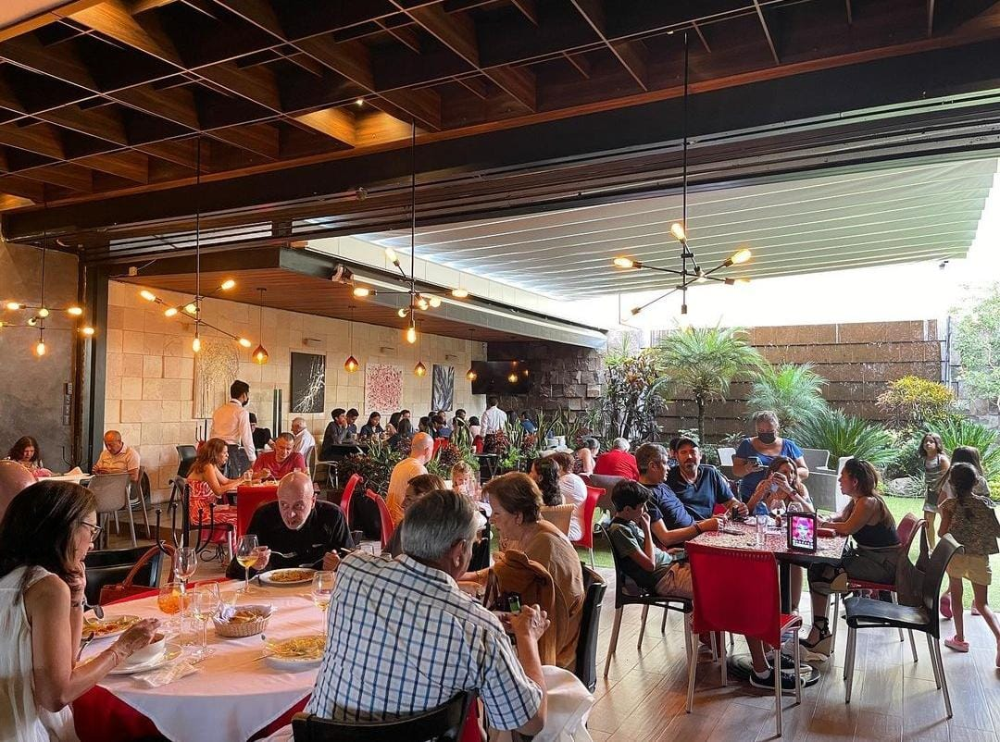
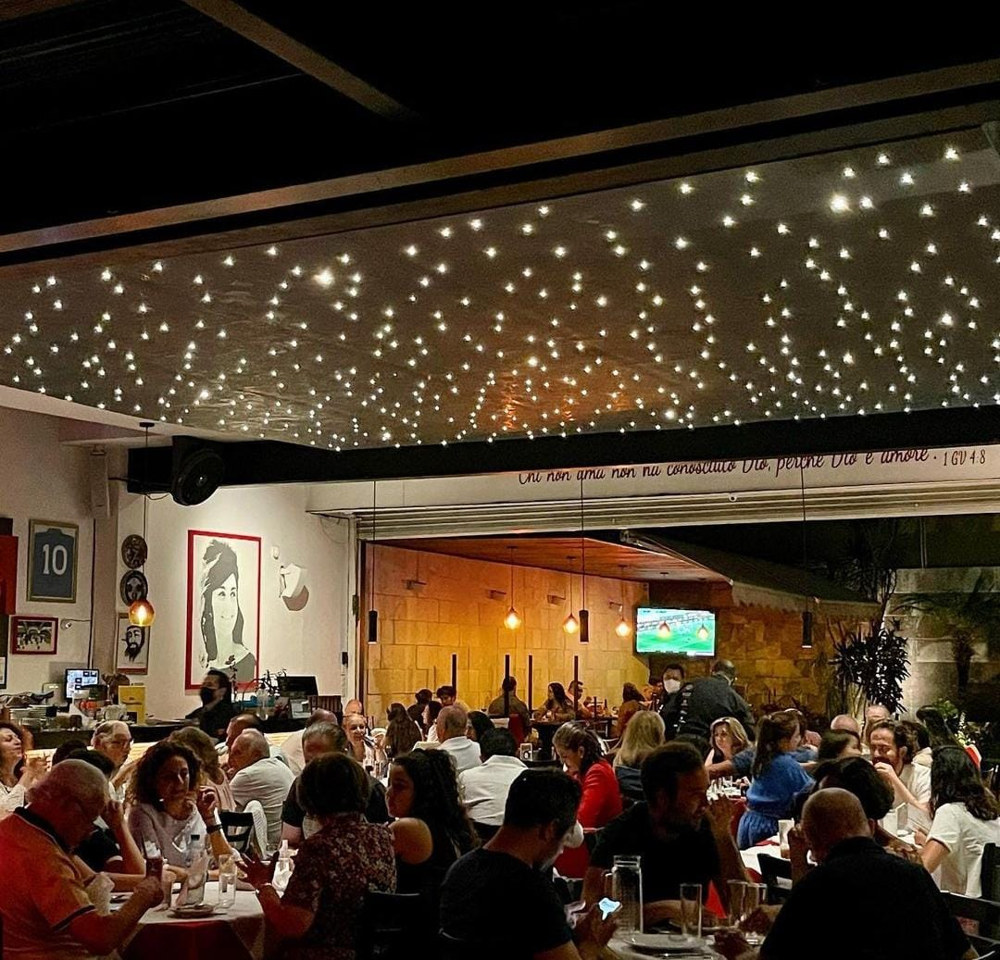

Sobre Nosotros
Historia
Comenzamos nuestro negocio en el año 2020 con un objetivo en mente :entregar una experiencia gastronomica única .Gracias a nuestros años de trayectoria y dedicación ,hemos logrado convertirnos en maestros de la industria .Entregando platillos frescos e inolvidables .

Sucursal Puebla
Primera sucursal fundada en 2020 en la Ciudad de Puebla de los Angeles , con un estilo contemporáeo fusionando la comida Italiana con la Mexicana creando nuevos sabores para consentir a nuestros comensales .

Sucursal Italia
Primera sucursal fundada en 2022 en Italia , con un estilo contemporáneo fusionando la comida Italiana con el sabor mexicano ,creando increibles platillos .